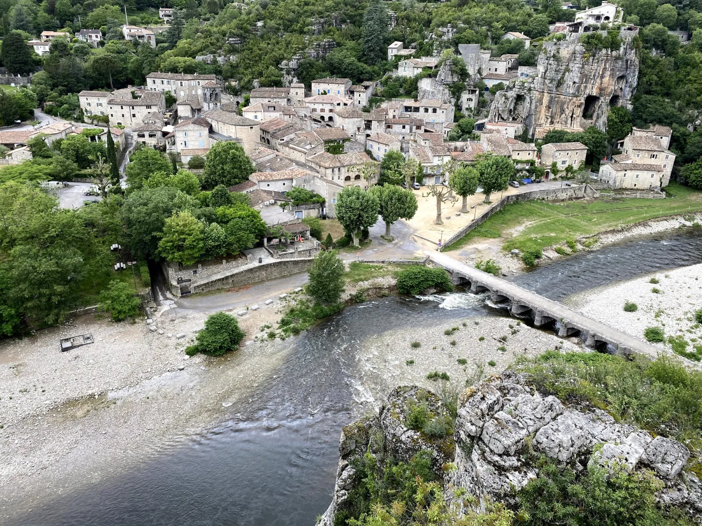

Op tien minuten rijden van Les Cabritas Sud-Ardèche is Labeaume een van de charmantste karaktervolle dorpen van de Zuid-Ardèche. Het dorp, tegen een rotswand aan de oever van de rivier de Beaume, valt op door zijn huizen die deels in de rots zijn gebouwd, zijn geplaveide straatjes ('calades') en zijn hangende tuinen die zich sinds de 18e eeuw aan de helling vastklampen. Lang buiten de grote routes gebleven, heeft het dorp een zeldzame authenticiteit bewaard, met schaduwrijke steegjes, overwelfde doorgangen en een weids uitzicht over het heldere water van de Beaume.

Een dorp gebouwd in de rots
De huizen van Labeaume leunen rechtstreeks tegen de kalksteenwand boven de Beaume, en sommige nemen de kale rots op in hun muren of kelders — een half-troglodytische bouwstijl die typisch is voor de Zuid-Ardèche. U verkent het oude dorp via een doolhof van smalle geplaveide straatjes en overwelfde doorgangen die naar de kerk klimmen, terwijl de terrastuinen, vanaf de 18e eeuw op de hoogten aangelegd, dankzij vernuftige irrigatie ooit vijgenbomen, olijven en groenten op de schrale grond lieten groeien.
De Beaume: zwemmen en wandelen
Onder het dorp vormt de Beaume brede, ondiepe poelen die ideaal zijn voor kinderen, en enkele diepere plekken om te zwemmen, op een bodem van kiezels en rotsen die glad kunnen zijn. Een gemarkeerd pad leidt in ongeveer een kwartier naar een uitkijkpunt met panoramisch zicht over het dorp en de omliggende kloven. Elke zomer brengt het festival 'Labeaume en musiques' klassieke en barokconcerten naar de oevers van de rivier, in een uitzonderlijk natuurlijk akoestisch decor.
Goed om te weten voor uw bezoek
Reken op ongeveer 10 minuten rijden vanaf Les Cabritas Sud-Ardèche naar Labeaume. Het dorp verkent u het best te voet: u parkeert op de grote parkeerplaats bij de ingang van het dorp (betalend in juli-augustus), op korte loopafstand van de eerste geplaveide straatjes. Neem dichte schoenen mee om over de rotsen van de Beaume te klauteren, en reserveer vooraf als u in de zomer een concert van Labeaume en musiques wilt bijwonen.
Praktische informatie vanuit Les Cabritas
- Afstand vanaf Saint-Alban-Auriolles: ongeveer 10 minuten rijden
- Beste periode: het hele jaar, concerten in juli-augustus
- Ideaal voor: erfgoedwandeling, zwemmen, fotografie, muziekliefhebbers
Zin om Labeaume te ontdekken vanuit uw vakantiehuis in de Ardèche?
Les Cabritas Sud-Ardèche verwelkomt u in Saint-Alban-Auriolles, in het hart van de Zuid-Ardèche, voor een comfortabel verblijf met privézwembad, vlak bij de mooiste plekken van de streek.
Beschikbaarheid bekijken